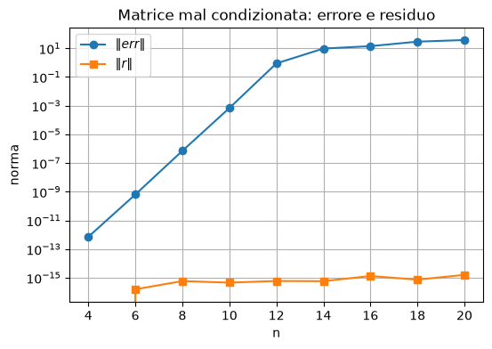

Sistemi lineari, condizionamento e metodi diretti#
Questo notebook presenta alcuni numerici per la risoluzione di sistemi lineari ed il concetto di condizionamento.
Argomenti:
il problema \(Ax=b\);
limiti della regola di Cramer;
perché evitare il calcolo esplicito dell’inversa;
norme vettoriali e matriciali;
errore assoluto e relativo;
condizionamento rispetto a perturbazioni su \(b\);
condizionamento rispetto a perturbazioni su \(A\);
sistemi triangolari;
fattorizzazione LU;
eliminazione di Gauss;
pivoting parziale;
stabilità numerica;
algoritmo di Thomas;
fattorizzazione di Cholesky;
fattorizzazione QR;
trasformazioni di Householder;
esercizi ed esperimenti.
import numpy as np
import math
import time
np.set_printoptions(precision=6, suppress=True)
Parte I — Il problema \(Ax=b\)#
1. Formulazione del problema#
Uno dei problemi più frequenti nel calcolo scientifico è la soluzione di un sistema lineare.
Un sistema lineare quadrato, cioè con tante equazioni quante incognite, si scrive in forma matriciale come
dove
La matrice \(A\) contiene i coefficienti, il vettore \(b\) contiene i termini noti e \(x\) è il vettore delle incognite.
Se \(A\) è non singolare, cioè invertibile, il sistema ha una e una sola soluzione.
Esempio elementare#
Consideriamo
In forma matriciale:
A = np.array([[2., 1.],
[1., 3.]])
b = np.array([1., 2.])
x = np.linalg.solve(A, b)
print("A =")
print(A)
print("b =", b)
print("Soluzione x =", x)
print("Verifica A @ x =", A @ x)
A =
[[2. 1.]
[1. 3.]]
b = [1. 2.]
Soluzione x = [0.2 0.6]
Verifica A @ x = [1. 2.]
Ma cosa c’è dietro al comando np.linalg.solve?
Matrici singolari e non singolari#
La frase precedente, “se \(A\) è non singolare”, merita di essere precisata.
Per una matrice quadrata \(A\in\mathbb{R}^{n\times n}\), le seguenti proprietà sono equivalenti:
\(A\) è non singolare;
esiste l’inversa \(A^{-1}\);
\(\det(A)\neq 0\);
\(\operatorname{rank}(A)=n\), cioè le colonne di \(A\) sono linearmente indipendenti;
per ogni vettore \(z\neq 0\) si ha \(Az\neq 0\);
se \(\lambda_i\) sono gli autovalori di \(A\), allora \(\lambda_i\neq 0\) per ogni \(i\).
Queste caratterizzazioni dicono la stessa cosa da punti di vista diversi: algebraico, geometrico e spettrale.
In particolare, \(Az=0\) deve avere come unica soluzione \(z=0\). Se esiste invece un vettore non nullo \(z\) tale che \(Az=0\), allora \(A\) è singolare.
Esistenza e unicità della soluzione#
L’esistenza e l’unicità della soluzione di
dipendono dal fatto che \(A\) sia singolare o non singolare. Nel caso non singolare il comportamento è semplice: per ogni termine noto \(b\) esiste una e una sola soluzione.
Nel caso singolare, invece, bisogna guardare anche il vettore \(b\).
Indichiamo con \(R(A)\) l’insieme di tutti i vettori che si possono ottenere come combinazione lineare delle colonne di \(A\):
dove \(a_i\) è la \(i\)-esima colonna di \(A\). Questo insieme si chiama range o spazio colonnare di \(A\).
Il sistema \(Ax=b\) è compatibile se e solo se
cioè se \(b\) può essere scritto come combinazione lineare delle colonne di \(A\).
Tipo di matrice \(A\) |
Condizione su \(b\) |
Numero di soluzioni |
|---|---|---|
\(A\) non singolare |
qualunque \(b\) |
una sola soluzione |
\(A\) singolare |
\(b\in R(A)\) |
infinite soluzioni |
\(A\) singolare |
\(b\notin R(A)\) |
nessuna soluzione |
Quindi, quando \(A\) è singolare, non basta chiedersi se il determinante sia nullo: occorre anche stabilire se il termine noto \(b\) appartiene allo spazio generato dalle colonne di \(A\).
Da questo momento in poi, ci occuperemo esclusivamente del caso corrispondente alla prima riga della tabella.
2. Regola di Cramer: corretta ma impraticabile#
La regola di Cramer scrive la componente \(i\)-esima della soluzione come
dove \(A_i\) è la matrice ottenuta sostituendo la colonna \(i\)-esima di \(A\) con \(b\).
Dal punto di vista teorico è una formula elegante.
Dal punto di vista numerico è una pessima strategia per sistemi anche solo moderatamente grandi.
Per risolvere un sistema di ordine \(n\), Cramer richiede:
\(n+1\) determinanti;
\(n\) divisioni finali.
Se i determinanti sono calcolati con formule dirette, il costo cresce circa come \(n!\).
Questo rende il metodo inutilizzabile in pratica.
for n in [5, 10, 15, 20]:
ops_det = (n - 1) * math.factorial(n)
ops_cramer = (n + 1) * ops_det
print(f"n={n:2d}: operazioni stimate per Cramer ~ {ops_cramer:.3e}")
n= 5: operazioni stimate per Cramer ~ 2.880e+03
n=10: operazioni stimate per Cramer ~ 3.593e+08
n=15: operazioni stimate per Cramer ~ 2.929e+14
n=20: operazioni stimate per Cramer ~ 9.707e+20
3. Perché non calcolare esplicitamente \(A^{-1}\)#
Poiché
se \(A\) è invertibile si può scrivere formalmente
Tuttavia, per risolvere un sistema lineare, calcolare esplicitamente \(A^{-1}\) è di solito sconsigliato.
Motivi:
richiede più operazioni;
introduce arrotondamenti intermedi non necessari;
se si vuole solo \(x\), non serve conoscere tutta l’inversa.
In Python è preferibile usare:
np.linalg.solve(A, b)
invece di:
np.linalg.inv(A) @ b
A = np.array([[4., 2.],
[1., 3.]])
b = np.array([1., 2.])
x_solve = np.linalg.solve(A, b)
x_inv = np.linalg.inv(A) @ b
print("Soluzione con solve:", x_solve)
print("Soluzione con inversa:", x_inv)
print("Differenza:", np.linalg.norm(x_solve - x_inv))
Soluzione con solve: [-0.1 0.7]
Soluzione con inversa: [-0.1 0.7]
Differenza: 1.2412670766236366e-16
4. Errore inerente e condizionamento#
Prima di scegliere un algoritmo, bisogna capire quanto il problema sia sensibile agli errori nei dati.
Nella pratica \(A\) e \(b\) possono essere perturbati perché:
provengono da misure sperimentali;
sono risultati di calcoli precedenti;
sono rappresentati in aritmetica floating point;
sono dati approssimati.
Quindi, invece di risolvere esattamente
potremmo risolvere un problema perturbato:
oppure
oppure ancora
Il condizionamento studia come le perturbazioni sui dati influenzano la soluzione.
Per questo occorre introdurre il concetto di errore, che è intrinsecamente legato a quello di grandezza di un vettore.
Parte II — Norme ed errori#
5. Norme vettoriali#
Una norma vettoriale è una funzione
che misura la grandezza di un vettore.
Deve soddisfare:
\(\|x\|\ge 0\) e \(\|x\|=0\) se e solo se \(x=0\);
\(\|x+y\|\le\|x\|+\|y\|\);
\(\|\alpha x\|=|\alpha|\|x\|\).
Le norme più usate sono:
x = np.array([3., -4., 12.])
print("x =", x)
print("||x||_1 =", np.linalg.norm(x, 1))
print("||x||_2 =", np.linalg.norm(x, 2))
print("||x||_inf =", np.linalg.norm(x, np.inf))
x = [ 3. -4. 12.]
||x||_1 = 19.0
||x||_2 = 13.0
||x||_inf = 12.0
6. Interpretazione delle norme#
La norma \(\|x\|_2\) è la distanza euclidea usuale.
La norma \(\|x\|_1\) somma il contributo assoluto di tutte le componenti.
In due dimensioni è spesso chiamata distanza Manhattan.
La norma \(\|x\|_\infty\) guarda solo la componente massima in valore assoluto.
Le norme non danno lo stesso numero, ma in dimensione finita sono equivalenti: se una successione tende a zero in una norma, tende a zero anche nelle altre.
vectors = [
np.array([1., 0.]),
np.array([1., 1.]),
np.array([2., -3.]),
np.array([-4., 1.])
]
for v in vectors:
print("v =", v)
print(" ||v||_1 =", np.linalg.norm(v, 1))
print(" ||v||_2 =", np.linalg.norm(v, 2))
print(" ||v||_inf =", np.linalg.norm(v, np.inf))
v = [1. 0.]
||v||_1 = 1.0
||v||_2 = 1.0
||v||_inf = 1.0
v = [1. 1.]
||v||_1 = 2.0
||v||_2 = 1.4142135623730951
||v||_inf = 1.0
v = [ 2. -3.]
||v||_1 = 5.0
||v||_2 = 3.605551275463989
||v||_inf = 3.0
v = [-4. 1.]
||v||_1 = 5.0
||v||_2 = 4.123105625617661
||v||_inf = 4.0
7. Relazioni fra norme vettoriali#
Per ogni \(x\in\mathbb{R}^n\) valgono:
Queste disuguaglianze sono utili perché permettono di passare da una norma all’altra quando si stimano gli errori.
rng = np.random.default_rng(0)
n = 5
x = rng.normal(size=n)
n1 = np.linalg.norm(x, 1)
n2 = np.linalg.norm(x, 2)
ninf = np.linalg.norm(x, np.inf)
print("x =", x)
print("\n||x||_inf <= ||x||_2 <= sqrt(n)||x||_inf")
print(ninf, "<=", n2, "<=", np.sqrt(n) * ninf)
print("\n||x||_2 <= ||x||_1 <= sqrt(n)||x||_2")
print(n2, "<=", n1, "<=", np.sqrt(n) * n2)
print("\n||x||_inf <= ||x||_1 <= n||x||_inf")
print(ninf, "<=", n1, "<=", n * ninf)
x = [ 0.12573 -0.132105 0.640423 0.1049 -0.535669]
||x||_inf <= ||x||_2 <= sqrt(n)||x||_inf
0.6404226504432821 <= 0.8610149049370425 <= 1.4320285807217645
||x||_2 <= ||x||_1 <= sqrt(n)||x||_2
0.8610149049370425 <= 1.538827225142128 <= 1.9252878570797463
||x||_inf <= ||x||_1 <= n||x||_inf
0.6404226504432821 <= 1.538827225142128 <= 3.20211325221641
Significato geometrico delle norme vettoriali#
Una norma misura la “lunghezza” o “grandezza” di un vettore, ma il concetto di lunghezza dipende dalla norma scelta.
Nel piano \(\mathbb{R}^2\), possiamo capire geometricamente una norma osservando la sua sfera unitaria, cioè l’insieme dei vettori che hanno norma uguale a 1:
Per le norme più comuni si ottengono figure diverse:
la norma \(\|x\|_2\) produce la circonferenza unitaria usuale, oveero \(x^2+y^2=1\);
la norma \(\|x\|_1\) produce un rombo;
la norma \(\|x\|_\infty\) produce un quadrato.
Quindi, norme diverse inducono geometrie diverse: lo stesso vettore può avere lunghezze diverse a seconda della norma utilizzata.

Un modo utile per interpretare geometricamente la norma di un vettore è il seguente:
La norma \(\|x\|\) è il fattore con cui bisogna espandere, o contrarre, la sfera unitaria associata alla norma affinché essa passi per il vettore \(x\).
In altre parole, se \(\|x\| = \alpha\), allora il vettore \(x\) si trova sul bordo della sfera di raggio \(\alpha\) rispetto a quella norma:
Consideriamo ad esempio
Allora:
Lo stesso vettore ha quindi lunghezze diverse nelle tre geometrie.
8. Errore assoluto ed errore relativo#
Se \(\tilde{x}\) è un’approssimazione di \(x\), allora
L’errore relativo è
L’errore relativo è spesso più informativo perché tiene conto della scala del problema.
def relative_error(x_tilde, x):
return np.linalg.norm(x_tilde - x) / np.linalg.norm(x)
x1 = np.array([1_000_000.0])
x1_tilde = np.array([1_000_000.001])
x2 = np.array([1e-6])
x2_tilde = np.array([1e-3 + 1e-6])
for x, xt in [(x1, x1_tilde), (x2, x2_tilde)]:
err_abs = np.linalg.norm(xt - x)
err_rel = relative_error(xt, x)
print("x =", x[0])
print(" errore assoluto =", err_abs)
print(" errore relativo =", err_rel)
x = 1000000.0
errore assoluto = 0.0010000000474974513
errore relativo = 1.0000000474974514e-09
x = 1e-06
errore assoluto = 0.001
errore relativo = 1000.0000000000001
9. Norme matriciali#
Una norma matriciale misura la grandezza di una matrice.
Le norme matriciali indotte sono definite da
Interpretazione:
\(\|A\|\) è il massimo fattore con cui \(A\) può amplificare la norma di un vettore.
Da questa definizione segue:
Per matrici di dimensioni compatibili:
Le norme matriciali più importanti sono:
cioè il massimo delle somme assolute sulle colonne;
cioè il massimo delle somme assolute sulle righe;
detta norma spettrale.
A = np.array([[1., -2., 0.],
[3., 4., 1.],
[0., -1., 2.]])
print("A =")
print(A)
print("\nSomme assolute per colonna:", np.sum(np.abs(A), axis=0))
print("||A||_1 =", np.linalg.norm(A, 1))
print("\nSomme assolute per riga:", np.sum(np.abs(A), axis=1))
print("||A||_inf =", np.linalg.norm(A, np.inf))
print("\n||A||_2 =", np.linalg.norm(A, 2))
A =
[[ 1. -2. 0.]
[ 3. 4. 1.]
[ 0. -1. 2.]]
Somme assolute per colonna: [4. 7. 3.]
||A||_1 = 7.0
Somme assolute per riga: [3. 8. 3.]
||A||_inf = 8.0
||A||_2 = 5.233193693489434
10. Verifica numerica della proprietà \(\|Ax\|\le \|A\|\|x\|\)#
La cella seguente genera una matrice e alcuni vettori casuali, poi verifica la disuguaglianza per la norma 2.
rng = np.random.default_rng(1)
A = rng.normal(size=(4, 4))
A_norm = np.linalg.norm(A, 2)
for k in range(5):
x = rng.normal(size=4)
lhs = np.linalg.norm(A @ x, 2)
rhs = A_norm * np.linalg.norm(x, 2)
print(f"test {k}: ||Ax||={lhs:.6f}, ||A||||x||={rhs:.6f}, ok={lhs <= rhs + 1e-12}")
test 0: ||Ax||=0.408065, ||A||||x||=1.624893, ok=True
test 1: ||Ax||=1.240100, ||A||||x||=3.089409, ok=True
test 2: ||Ax||=4.859340, ||A||||x||=6.198649, ok=True
test 3: ||Ax||=3.419579, ||A||||x||=4.480854, ok=True
test 4: ||Ax||=1.374268, ||A||||x||=4.226532, ok=True
Abbiamo ora tutti gli strumenti per tornare allo studio dell’errore inerente, introdotto nella Sezione 4.
Parte III — Condizionamento del sistema lineare#
11. Numero di condizione#
Sia \(A \in \mathbb{R}^{n\times n}\) una matrice quadrata non singolare. Il suo numero di condizione rispetto a una norma matriciale è definito come
Il numero di condizione misura quanto la soluzione del sistema lineare
può essere sensibile a piccole perturbazioni dei dati. In particolare:
se \(K(A)\) è vicino a \(1\), il sistema è ben condizionato;
se \(K(A)\) è grande, il sistema è mal condizionato;
un valore grande di \(K(A)\) indica che \(A\) è vicina a essere singolare.
Una proprietà importante è che il reciproco del numero di condizione misura la distanza relativa di \(A\) dall’insieme delle matrici singolari:
Quindi, se \(K(A)\) è grande, allora \(1/K(A)\) è piccolo: la matrice \(A\) è una buona approssimazione di una matrice singolare.
Proprietà del numero di condizione#
Assumiamo di usare norme indotte, in particolare le \(p\)-norme.
Per la matrice identità vale
Per ogni matrice non singolare \(A\) vale
Infatti
Inoltre, per ogni scalare \(\gamma\ne 0\),
perché
Se \(D=\operatorname{diag}(d_i)\) è una matrice diagonale non singolare, allora
Questa formula mostra che una matrice diagonale è mal condizionata quando i suoi elementi diagonali hanno ordini di grandezza molto diversi.
# Esempi elementari di numero di condizione
A1 = np.eye(4)
A2 = np.diag([1, 10, 100, 1000])
A3 = np.array([[1.0, 1.0],
[1.0, 1.000001]])
for name, A in [("Identita", A1), ("Diagonale", A2), ("Quasi singolare", A3)]:
print(name)
print(" cond_1(A) =", np.linalg.cond(A, 1))
print(" cond_2(A) =", np.linalg.cond(A, 2))
print(" cond_inf(A) =", np.linalg.cond(A, np.inf))
print()
Identita
cond_1(A) = 1.0
cond_2(A) = 1.0
cond_inf(A) = 1.0
Diagonale
cond_1(A) = 1000.0
cond_2(A) = 1000.0
cond_inf(A) = 1000.0
Quasi singolare
cond_1(A) = 4000004.000330067
cond_2(A) = 4000002.0005977233
cond_inf(A) = 4000004.000330067
12. Stime dell’errore e ruolo di \(K(A)\)#
Il numero di condizione fornisce una stima dell’errore relativo sulla soluzione calcolata di un sistema lineare.
Consideriamo il sistema esatto
e il sistema perturbato
Allora, trascurando termini di ordine superiore, si ottiene la stima
Questa relazione dice che il numero di condizione può amplificare gli errori relativi presenti nei dati \(A\) e \(b\).
Una regola pratica è:
se \(K(A)\simeq n^p\), con \(p=0,1,2,3\), il problema è in genere ben condizionato;
se \(K(A)\simeq 10^n\), il problema è in genere mal condizionato.
Da dove viene la definizione di \(K(A)\)?#
La stima \((*)\) ci fa vedere da dove viene la definizione del numero di condizione. In particolare la definizione è costruttiva: cerchiamo una maggiorazione dell’errore sulla soluzione in funzione dell’errore sui dati del tipo “errore sulla soluzione \(\leq\) costante \(\cdot\) errore sui dati”. Definimo \(K(A)\) essere quella costante che appare nella maggiorazione.
Dimostrazione della stima \((*)\):#
Introduciamo un parametro reale \(t\) e definiamo
Consideriamo inoltre la soluzione perturbata, scritta come
del sistema
Derivando rispetto a \(t\) otteniamo
cioè
Valutando in \(t=0\) si ha
da cui
Passando alle norme:
Dividendo per \(\|x\|\):
Moltiplichiamo e dividiamo i termini opportunamente per \(\|A\|\):
Poiché
segue che
Pertanto
ossia
# Verifica numerica della stima dell'errore
A = np.array([[1.0, 2.0],
[0.499, 1.001]])
b = np.array([3.0, 1.5])
x = np.linalg.solve(A, b)
# Piccola perturbazione su A e b
E = np.array([[0.0, 0.0],
[0.001, 0.001]])
db = np.array([0.0, 0.0])
x_pert = np.linalg.solve(A + E, b + db)
dx = x_pert - x
rel_x = np.linalg.norm(dx, 1) / np.linalg.norm(x, 1)
rel_A = np.linalg.norm(E, 1) / np.linalg.norm(A, 1)
rel_b = np.linalg.norm(db, 1) / np.linalg.norm(b, 1)
bound = np.linalg.cond(A, 1) * (rel_b + rel_A)
print("x esatta =", x)
print("x perturbata =", x_pert)
print("cond_1(A) =", np.linalg.cond(A, 1))
print("||delta x||/||x|| =", rel_x)
print("stima superiore =", bound)
x esatta = [1. 1.]
x perturbata = [3. 0.]
cond_1(A) = 3001.0000000001082
||delta x||/||x|| = 1.5000000000000833
stima superiore = 1.0000000000000362
13. Residuo ed errore#
Sia \(\bar{x}\) una soluzione approssimata del sistema lineare
Il residuo associato a \(\bar{x}\) è definito come
In teoria, se \(A\) è non singolare, allora
In pratica, però, un residuo piccolo non implica necessariamente un errore piccolo sulla soluzione.
Infatti vale la stima
Quindi un piccolo residuo relativo implica un piccolo errore relativo nella soluzione approssimata solo se \(A\) è ben condizionata.
In altre parole, un residuo piccolo indica che \(\tilde{x}\) soddisfa bene il sistema.
Tuttavia, se \(A\) è mal condizionata, il residuo può essere piccolo anche quando l’errore sulla soluzione è grande.
Quindi:
il residuo misura la qualità dell’equazione soddisfatta;
l’errore misura la distanza dalla soluzione vera.
Dimostrazione della stima \((**)\)#
Poiché \(Ax=b\), si ha
Quindi
Passando alle norme:
Dividendo per \(\|x\|\) otteniamo
Moltiplicando e dividendo per \(\|A\|\):
Poiché \(K(A)=\|A\|\,\|A^{-1}\|\), segue
14. Esempio: Matrice di Hilbert#
La matrice di Hilbert di ordine \(n\) è definita da
usando indici Python che partono da zero.
È un esempio classico di matrice mal condizionata.
def hilbert(n):
return np.array([[1.0 / (i + j + 1) for j in range(n)] for i in range(n)])
for n in range(2, 13, 2):
H = hilbert(n)
print(f"n={n:2d}, cond_2(H)={np.linalg.cond(H):.3e}")
n= 2, cond_2(H)=1.928e+01
n= 4, cond_2(H)=1.551e+04
n= 6, cond_2(H)=1.495e+07
n= 8, cond_2(H)=1.526e+10
n=10, cond_2(H)=1.603e+13
n=12, cond_2(H)=1.678e+16
# Residuo piccolo non significa necessariamente errore piccolo
# Usiamo matrici di Hilbert, che diventano rapidamente mal condizionate.
import matplotlib.pyplot as plt
def hilbert(n):
return np.array([[1.0 / (i + j + 1) for j in range(n)] for i in range(n)])
ns = np.arange(4, 21, 2)
errors = []
residuals = []
conds = []
for n in ns:
H = hilbert(n)
x_true = np.ones(n)
b = H @ x_true
x_comp = np.linalg.solve(H, b)
err = np.linalg.norm(x_comp - x_true, 2)
res = np.linalg.norm(b - H @ x_comp, 2)
errors.append(err)
residuals.append(res)
conds.append(np.linalg.cond(H, 2))
plt.figure(figsize=(6, 4))
plt.semilogy(ns, errors, marker="o", label=r"$\|err\|$")
plt.semilogy(ns, residuals, marker="s", label=r"$\|r\|$")
plt.xlabel("n")
plt.ylabel("norma")
plt.title("Matrice mal condizionata: errore e residuo")
plt.legend()
plt.grid(True, which="both")
plt.show()
for n, c, e, r in zip(ns, conds, errors, residuals):
print(f"n={n:2d} cond_2(H)={c:.3e} ||err||={e:.3e} ||r||={r:.3e}")

n= 4 cond_2(H)=1.551e+04 ||err||=7.175e-13 ||r||=0.000e+00
n= 6 cond_2(H)=1.495e+07 ||err||=6.401e-10 ||r||=1.570e-16
n= 8 cond_2(H)=1.526e+10 ||err||=7.040e-07 ||r||=5.875e-16
n=10 cond_2(H)=1.603e+13 ||err||=6.794e-04 ||r||=4.578e-16
n=12 cond_2(H)=1.678e+16 ||err||=8.767e-01 ||r||=5.979e-16
n=14 cond_2(H)=1.894e+17 ||err||=9.530e+00 ||r||=5.769e-16
n=16 cond_2(H)=4.348e+17 ||err||=1.400e+01 ||r||=1.332e-15
n=18 cond_2(H)=3.568e+19 ||err||=2.887e+01 ||r||=7.364e-16
n=20 cond_2(H)=1.932e+18 ||err||=3.752e+01 ||r||=1.597e-15
Questo esempio mostra che, per una matrice mal condizionata come la matrice di Hilbert, potremmo avere un piccolo residuo, ma un grande errore sulla soluzione. In questo caso il residuo non è quindi una misura affidabile di accuratezza della soluzione.
15. Esempio: una matrice mal condizionata#
Consideriamo la matrice
Per questa matrice si ha, sia per \(p=1\) sia per \(p=\infty\),
Poiché \(n=2\) e
la matrice può essere considerata mal condizionata.
Risolviamo il sistema
cioè
La soluzione esatta è
Ora perturbiamo la matrice risolvendo
ossia
La soluzione diventa
In questo caso la perturbazione relativa è
il residuo relativo è
ma l’errore relativo sulla soluzione è
Questo esempio mostra concretamente che una piccola perturbazione dei dati può produrre un grande errore sulla soluzione quando la matrice è mal condizionata.
# Riproduzione numerica dell'esempio
A = np.array([[1.000, 2.000],
[0.499, 1.001]])
b = np.array([3.000, 1.500])
A_tilde = np.array([[1.000, 2.000],
[0.500, 1.002]])
E = A_tilde - A
x_star = np.linalg.solve(A, b)
x_tilde = np.linalg.solve(A_tilde, b)
delta_x = x_tilde - x_star
print("A =")
print(A)
print("\ncond_1(A) =", np.linalg.cond(A, 1))
print("cond_inf(A) =", np.linalg.cond(A, np.inf))
print("\nx* =", x_star)
print("x_tilde =", x_tilde)
print("E =")
print(E)
rel_E = np.linalg.norm(E, 1) / np.linalg.norm(A, 1)
rel_res = np.linalg.norm(A @ x_tilde - b, 1) / np.linalg.norm(b, 1)
rel_err = np.linalg.norm(delta_x, 1) / np.linalg.norm(x_star, 1)
print("\n||E||_1 / ||A||_1 =", rel_E)
print("||A x_tilde - b||_1/||b||_1 =", rel_res)
print("||delta x||_1 / ||x||_1 =", rel_err)
A =
[[1. 2. ]
[0.499 1.001]]
cond_1(A) = 3001.0000000001082
cond_inf(A) = 3001.0000000001082
x* = [1. 1.]
x_tilde = [3. 0.]
E =
[[0. 0. ]
[0.001 0.001]]
||E||_1 / ||A||_1 = 0.000333222259246955
||A x_tilde - b||_1/||b||_1 = 0.0006666666666666919
||delta x||_1 / ||x||_1 = 1.5000000000000833
Parte IV — Sistemi triangolari#
16. Sostituzione in avanti#
Se \(L\) è triangolare inferiore, il sistema
si risolve calcolando le componenti di \(y\) dall’alto verso il basso.
Ad esempio, nel caso \(n=3\), il sistema triangolare inferiore ha la forma seguente:
Le incognite si calcolano progressivamente come
In forma compatta:
Poiché al passo \(i\) si usano solo le componenti già calcolate \(y_1,\dots,y_{i-1}\), l’algoritmo procede dall’alto verso il basso.
Il costo computazionale complessivo, per un sistema triangolare inferiore di ordine \(n\), è dell’ordine di
Lo stesso procedimento può essere scritto in forma algoritmica.
Pseudocodice — Sostituzione in avanti
Input: matrice triangolare inferiore L, termine noto b
Output: soluzione y del sistema Ly = b
for i = 1, ..., n:
somma = 0
for j = 1, ..., i-1:
somma = somma + l_{i,j} y_j
y_i = (b_i - somma) / l_{i,i}
def forward_substitution(L, b):
L = np.array(L, dtype=float)
b = np.array(b, dtype=float)
n = len(b)
y = np.zeros(n)
for i in range(n):
s = np.dot(L[i, :i], y[:i])
if abs(L[i, i]) < 1e-15:
raise ZeroDivisionError("Elemento diagonale nullo nella matrice L.")
y[i] = (b[i] - s) / L[i, i]
return y
L = np.array([[2., 0., 0.],
[1., 3., 0.],
[4., 2., 1.]])
b = np.array([2., 5., 9.])
y = forward_substitution(L, b)
print("y =", y)
print("L @ y =", L @ y)
y = [1. 1.333333 2.333333]
L @ y = [2. 5. 9.]
17. Sostituzione in avanti con diagonale unitaria#
Se \(L\) ha diagonale unitaria, cioè \(l_{ii}=1\), allora
Questo è frequente nella fattorizzazione LU che vedremo tra poco.
def forward_substitution_unit_lower(L, b):
L = np.array(L, dtype=float)
b = np.array(b, dtype=float)
n = len(b)
y = np.zeros(n)
for i in range(n):
y[i] = b[i] - np.dot(L[i, :i], y[:i])
return y
L_unit = np.array([[1., 0., 0.],
[2., 1., 0.],
[3., 4., 1.]])
b = np.array([2., 1., 2.])
y = forward_substitution_unit_lower(L_unit, b)
print("y =", y)
print("L_unit @ y =", L_unit @ y)
y = [ 2. -3. 8.]
L_unit @ y = [2. 1. 2.]
17. Sostituzione all’indietro#
Se \(U\) è triangolare superiore, il sistema
si risolve calcolando le componenti di \(x\) dal basso verso l’alto.
Ad esempio, nel caso \(n=3\), il sistema triangolare superiore ha la forma seguente:
Le incognite si calcolano progressivamente come
In forma compatta:
Poiché al passo \(i\) si usano solo le componenti già calcolate \(x_{i+1},\dots,x_n\), l’algoritmo procede dal basso verso l’alto.
Il costo computazionale complessivo, per un sistema triangolare superiore di ordine \(n\), è dell’ordine di
Pseudocodice — Sostituzione all’indietro
Input: matrice triangolare superiore U, termine noto b
Output: soluzione x del sistema Ux = b
for i = n, n-1, ..., 1:
somma = 0
for j = i+1, ..., n:
somma = somma + u_{i,j} x_j
x_i = (b_i - somma) / u_{i,i}
def backward_substitution(U, y):
U = np.array(U, dtype=float)
y = np.array(y, dtype=float)
n = len(y)
x = np.zeros(n)
for i in range(n - 1, -1, -1):
s = np.dot(U[i, i+1:], x[i+1:])
if abs(U[i, i]) < 1e-15:
raise ZeroDivisionError("Elemento diagonale nullo nella matrice U.")
x[i] = (y[i] - s) / U[i, i]
return x
U = np.array([[2., 1., 0.],
[0., 3., 2.],
[0., 0., 4.]])
y = np.array([2., -3., 8.])
x = backward_substitution(U, y)
print("x =", x)
print("U @ x =", U @ x)
x = [ 2.166667 -2.333333 2. ]
U @ x = [ 2. -3. 8.]
Parte V — Fattorizzazione LU#
19. Idea della fattorizzazione LU#
La fattorizzazione LU scrive \(A\) come prodotto di due matrici nella forma
dove:
\(L\) è triangolare inferiore;
\(U\) è triangolare superiore.
Se \(A=LU\), allora
Ponendo
si risolvono, nell’ordine indicato, due sistemi triangolari:
Attenzione: l’ordine di risoluzione dei due sistemi è fondamentale. Possiamo risolvere per primo \(Ly=b\), perchè abbiamo tutte le informazioni relative a questo sistema (matrice e termine noto). Mentre non è possibile risolvere per primo \(Ux=y\) perchè non possediamo il termine noto \(y\).
20. Esistenza della LU senza pivoting#
La fattorizzazione LU senza scambi di righe non è garantita per ogni matrice invertibile.
Una condizione sufficiente è che i minori principali di ordine
siano tutti diversi da zero.
Dato \(A\in\mathbb{R}^{n\times n}\), il minore principale di ordine \(k\) è il determinante della sottomatrice ottenuta prendendo le prime \(k\) righe e le prime \(k\) colonne di \(A\):
Quindi la condizione richiesta per l’esistenza della fattorizzazione LU senza pivoting è
Se durante l’algoritmo compare un pivot nullo, la LU senza pivoting fallisce.
Se compare un pivot molto piccolo, l’algoritmo può essere numericamente instabile.
def lu_no_pivot(A):
A = np.array(A, dtype=float)
n = A.shape[0]
U = A.copy()
L = np.eye(n)
for k in range(n - 1):
if abs(U[k, k]) < 1e-15:
raise ZeroDivisionError("Pivot nullo: serve pivoting.")
for i in range(k + 1, n):
L[i, k] = U[i, k] / U[k, k]
U[i, k:] = U[i, k:] - L[i, k] * U[k, k:]
U[i, k] = 0.0
return L, U
21. Eliminazione di Gauss: passo per passo#
Sia
Il metodo di Gauss trasforma \(A\) in una matrice triangolare superiore \(U\) annullando gli elementi sotto la diagonale principale.
Al primo passo si assume
e si usa la matrice elementare
Allora
dove
Secondo passo#
Al secondo passo si assume
e si annulla \(a_{32}^{(1)}\) tramite
Quindi
con
Dall’eliminazione alla fattorizzazione LU#
Poiché
si ha
Ponendo
si ottiene
Nel caso \(3\times 3\),
La matrice \(L\) è triangolare inferiore a diagonale unitaria, mentre \(U\) è triangolare superiore.
def lu_no_pivot_verbose(A):
A = np.array(A, dtype=float)
n = A.shape[0]
U = A.copy()
L = np.eye(n)
print("U iniziale:")
print(U)
for k in range(n - 1):
print(f"\nPasso k={k}")
print("Pivot =", U[k, k])
if abs(U[k, k]) < 1e-15:
raise ZeroDivisionError("Pivot nullo.")
for i in range(k + 1, n):
L[i, k] = U[i, k] / U[k, k]
print(f"Moltiplicatore L[{i},{k}] =", L[i, k])
U[i, k:] = U[i, k:] - L[i, k] * U[k, k:]
U[i, k] = 0.0
print("U aggiornata:")
print(U)
return L, U
A = np.array([[2., 1., 0.],
[4., 5., 2.],
[6., 15., 12.]])
L, U = lu_no_pivot_verbose(A)
print("\nL finale:")
print(L)
print("\nU finale:")
print(U)
print("\nErrore A-LU:", np.linalg.norm(A - L @ U))
U iniziale:
[[ 2. 1. 0.]
[ 4. 5. 2.]
[ 6. 15. 12.]]
Passo k=0
Pivot = 2.0
Moltiplicatore L[1,0] = 2.0
Moltiplicatore L[2,0] = 3.0
U aggiornata:
[[ 2. 1. 0.]
[ 0. 3. 2.]
[ 0. 12. 12.]]
Passo k=1
Pivot = 3.0
Moltiplicatore L[2,1] = 4.0
U aggiornata:
[[2. 1. 0.]
[0. 3. 2.]
[0. 0. 4.]]
L finale:
[[1. 0. 0.]
[2. 1. 0.]
[3. 4. 1.]]
U finale:
[[2. 1. 0.]
[0. 3. 2.]
[0. 0. 4.]]
Errore A-LU: 0.0
22. Soluzione completa con LU#
Data la fattorizzazione
la soluzione di \(Ax=b\) avviene così:
risolvi \(Ly=b\) con sostituzione in avanti;
risolvi \(Ux=y\) con sostituzione all’indietro.
A = np.array([[2., 1., 0.],
[4., 5., 2.],
[6., 15., 12.]])
b = np.array([2., 1., 2.])
L, U = lu_no_pivot(A)
y = forward_substitution(L, b)
x = backward_substitution(U, y)
print("L =")
print(L)
print("\nU =")
print(U)
print("\ny =", y)
print("x =", x)
print("Residuo ||Ax-b|| =", np.linalg.norm(A @ x - b))
print("Soluzione NumPy =", np.linalg.solve(A, b))
L =
[[1. 0. 0.]
[2. 1. 0.]
[3. 4. 1.]]
U =
[[2. 1. 0.]
[0. 3. 2.]
[0. 0. 4.]]
y = [ 2. -3. 8.]
x = [ 2.166667 -2.333333 2. ]
Residuo ||Ax-b|| = 6.280369834735101e-16
Soluzione NumPy = [ 2.166667 -2.333333 2. ]
23. Costo computazionale della LU#
La fattorizzazione LU tramite eliminazione di Gauss ha costo dell’ordine di \(\frac{1}{3}n^3\) moltiplicazioni/divisioni, più un numero comparabile di somme/sottrazioni, quindi il costo computazionale totale è dellordine di $\(\frac23n^3\)$
Le due sostituzioni triangolari costano ciascuna circa \(n^2\).
Per \(n\) grande, il costo dominante è quindi la fattorizzazione.
Dettagli#
Per costruire i moltiplicatori servono
divisioni.
Per aggiornare la matrice si lavora su blocchi di dimensione
Il numero di moltiplicazioni è
In totale:
6. Esempio di fattorizzazione LU#
Consideriamo
L’eliminazione produce
Quindi
9. Calcolo del determinante#
Se
allora, per il teorema di Binet,
Poiché \(L\) ha diagonale unitaria,
Quindi
Essendo \(U\) triangolare superiore,
Nel caso senza scambi di righe:
det_lu = np.prod(np.diag(U))
det_np = np.linalg.det(A)
print("det(A) tramite LU:", det_lu)
print("det(A) tramite NumPy:", det_np)
det(A) tramite LU: 24.0
det(A) tramite NumPy: 24.000000000000004
8. Calcolo dell’inversa#
Se \(A\) è invertibile,
Scrivendo
il calcolo dell’inversa equivale a risolvere \(n\) sistemi lineari:
Se \(A=LU\), per ogni colonna si risolvono
def inverse_from_lu(A):
A = np.array(A, dtype=float)
n = A.shape[0]
L, U = lu_no_pivot(A)
X = np.zeros_like(A)
I = np.eye(n)
for j in range(n):
y = forward_substitution(L, I[:, j])
X[:, j] = backward_substitution(U, y)
return X
A_inv_lu = inverse_from_lu(A)
A_inv_np = np.linalg.inv(A)
print("Inversa tramite LU:")
print(A_inv_lu)
print("\nErrore rispetto a NumPy:", np.linalg.norm(A_inv_lu - A_inv_np))
Inversa tramite LU:
[[ 1.25 -0.5 0.083333]
[-1.5 1. -0.166667]
[ 1.25 -1. 0.25 ]]
Errore rispetto a NumPy: 6.922220526417403e-16
Parte VI — Pivoting e stabilità#
26. Matrici di permutazione#
Una matrice di permutazione si ottiene permutando (ovvero scambiando) le righe della matrice identità.
Ad esempio, partendo dalla matrice identità di ordine 3,
scambiando la prima e la terza riga si ottiene la matrice di permutazione
Se
allora
Quindi \(PA\) è la matrice ottenuta da \(A\) scambiando la prima e la terza riga.
In generale, se \(P\) è una matrice di permutazione:
\(PA\) permuta le righe di \(A\);
\(AP\) permuta le colonne di \(A\).
Queste matrici permettono di descrivere formalmente gli scambi di righe usati nel pivoting che verrà introdotto nella sezione seguente.
Inoltre,
A_demo = np.array([[1., 2., 3.],
[4., 5., 6.],
[7., 8., 9.]])
P = np.array([[1., 0., 0.],
[0., 0., 1.],
[0., 1., 0.]])
print("A =")
print(A_demo)
print("\nP @ A: righe permutate")
print(P @ A_demo)
print("\nA @ P: colonne permutate")
print(A_demo @ P)
A =
[[1. 2. 3.]
[4. 5. 6.]
[7. 8. 9.]]
P @ A: righe permutate
[[1. 2. 3.]
[7. 8. 9.]
[4. 5. 6.]]
A @ P: colonne permutate
[[1. 3. 2.]
[4. 6. 5.]
[7. 9. 8.]]
10. Scambio di righe e matrici di permutazione#
La fattorizzazione senza pivoting può fallire se un pivot è nullo.
Ad esempio,
ha \(a_{11}=0\).
Scambiando le righe si ottiene
11. Fattorizzazione con pivoting parziale#
Con scambio di righe si cerca una matrice di permutazione \(P\) tale che
Per risolvere
si moltiplica a sinistra per \(P\):
Poiché
si ottiene
Quindi si risolvono
Gli stessi scambi di righe applicati ad \(A\) devono essere applicati anche a \(b\).
12. Teorema con pivoting#
Teorema.
Per ogni matrice
esiste una matrice di permutazione \(P\) tale che
dove \(L\) è triangolare inferiore con diagonale unitaria e \(U\) è triangolare superiore.
Se \(A\) è non singolare, la fattorizzazione si effettua in \(n-1\) passi.
Se \(A\) è singolare, il procedimento si arresta quando si incontra un pivot nullo non eliminabile.
def lu_partial_pivot(A):
A = np.array(A, dtype=float)
n = A.shape[0]
U = A.copy()
L = np.eye(n)
P = np.eye(n)
for k in range(n - 1):
pivot = k + np.argmax(np.abs(U[k:, k]))
if abs(U[pivot, k]) < 1e-15:
raise ZeroDivisionError("Matrice singolare o pivot nullo.")
if pivot != k:
U[[k, pivot], :] = U[[pivot, k], :]
P[[k, pivot], :] = P[[pivot, k], :]
if k > 0:
L[[k, pivot], :k] = L[[pivot, k], :k]
for i in range(k + 1, n):
L[i, k] = U[i, k] / U[k, k]
U[i, k:] = U[i, k:] - L[i, k] * U[k, k:]
return P, L, U
13. Esempio di pivoting parziale#
Consideriamo
Alla prima colonna, il massimo in modulo è \(4\), quindi non serve scambiare la prima riga.
Dopo il primo passo:
Il pivot successivo sarebbe \(0\), quindi si scambiano la seconda e la terza riga:
Si ottiene
A_piv = np.array([
[4, -8, 2],
[2, -4, 6],
[1, -1, 3]
], dtype=float)
P, L, U = lu_partial_pivot(A_piv)
print("P =")
print(P)
print("\nL =")
print(L)
print("\nU =")
print(U)
print("\nVerifica P @ A = L @ U:", np.allclose(P @ A_piv, L @ U))
P =
[[1. 0. 0.]
[0. 0. 1.]
[0. 1. 0.]]
L =
[[1. 0. 0. ]
[0.25 1. 0. ]
[0.5 0. 1. ]]
U =
[[ 4. -8. 2. ]
[ 0. 1. 2.5]
[ 0. 0. 5. ]]
Verifica P @ A = L @ U: True
14. Stabilità della fattorizzazione LU#
In aritmetica finita si ottengono matrici perturbate
Quindi
Poiché \(A=LU\),
Perciò
La relazione precedente dice che fattorizzazione LU è stabile se gli elementi di \(L\) e \(U\) non crescono troppo rispetto agli elementi di \(A\).
Stabilità forte: esistono costanti \(a,b\) indipendenti dall’ordine della matrice tali che
Stabilità debole: le costanti possono dipendere dall’ordine \(n\).
15. Pivoting e stabilità#
Durante l’eliminazione,
Se il pivot \(a_{kk}^{(k-1)}\) è piccolo, i moltiplicatori possono diventare molto grandi.
Con il pivoting parziale, si sceglie come pivot l’elemento di massimo modulo nella colonna corrente:
Allora
Gli elementi di \(L\) restano limitati.
Gli elementi di \(U\) possono crescere, ma vale
Quindi il pivoting parziale genera una fattorizzazione stabile in senso debole.
16. Esempio di instabilità senza pivoting#
Consideriamo
La soluzione esatta è circa
Senza pivoting, il primo pivot è \(10^{-20}\) e il moltiplicatore è
Questo valore enorme può produrre una forte perdita di precisione in aritmetica finita.
A_bad = np.array([
[1e-20, 1],
[1, 1]
], dtype=float)
b_bad = np.array([1, 2], dtype=float)
print("Soluzione con numpy:")
print(np.linalg.solve(A_bad, b_bad))
try:
L_bad, U_bad = lu_no_pivot(A_bad)
y_bad = forward_substitution(L_bad, b_bad)
x_bad = backward_substitution(U_bad, y_bad)
print("\nSenza pivoting:")
print("L =")
print(L_bad)
print("U =")
print(U_bad)
print("x =", x_bad)
except Exception as e:
print("Errore:", e)
P_bad, Lp_bad, Up_bad = lu_partial_pivot(A_bad)
yp_bad = forward_substitution(Lp_bad, P_bad @ b_bad)
xp_bad = backward_substitution(Up_bad, yp_bad)
print("\nCon pivoting parziale:")
print("P =")
print(P_bad)
print("L =")
print(Lp_bad)
print("U =")
print(Up_bad)
print("x =", xp_bad)
Soluzione con numpy:
[1. 1.]
Errore: Pivot nullo: serve pivoting.
Con pivoting parziale:
P =
[[0. 1.]
[1. 0.]]
L =
[[1. 0.]
[0. 1.]]
U =
[[1. 1.]
[0. 1.]]
x = [1. 1.]
17. Esempio con pivoting#
Con pivoting parziale si usa
Allora
La fattorizzazione produce circa
Risolvendo
si ottiene numericamente
La soluzione numerica coincide, nella precisione di calcolo, con la soluzione analitica.
18. Riassunto operativo#
Per risolvere
tramite il metodo di Gauss:
Senza pivoting#
Se non servono scambi di righe,
Si risolvono
Con pivoting parziale#
Se servono scambi di righe,
Allora
Si risolvono
Il pivoting parziale evita pivot nulli o troppo piccoli e migliora la stabilità numerica.
def lu_partial_pivot(A):
A = np.array(A, dtype=float)
n = A.shape[0]
U = A.copy()
L = np.eye(n)
P = np.eye(n)
for k in range(n - 1):
pivot = np.argmax(np.abs(U[k:, k])) + k
if abs(U[pivot, k]) < 1e-15:
raise np.linalg.LinAlgError("Pivot nullo: matrice singolare o quasi singolare.")
if pivot != k:
U[[k, pivot], :] = U[[pivot, k], :]
P[[k, pivot], :] = P[[pivot, k], :]
if k > 0:
L[[k, pivot], :k] = L[[pivot, k], :k]
for i in range(k + 1, n):
L[i, k] = U[i, k] / U[k, k]
U[i, k:] -= L[i, k] * U[k, k:]
U[i, k] = 0.0
return P, L, U
A = np.array([[0., 3.],
[1., 2.]])
P, L, U = lu_partial_pivot(A)
print("P =")
print(P)
print("\nL =")
print(L)
print("\nU =")
print(U)
print("\nP @ A =")
print(P @ A)
print("\nL @ U =")
print(L @ U)
P =
[[0. 1.]
[1. 0.]]
L =
[[1. 0.]
[0. 1.]]
U =
[[1. 2.]
[0. 3.]]
P @ A =
[[1. 2.]
[0. 3.]]
L @ U =
[[1. 2.]
[0. 3.]]
def solve_lu_pivot(A, b):
P, L, U = lu_partial_pivot(A)
y = forward_substitution(L, P @ b)
x = backward_substitution(U, y)
return x
A = np.array([[0., 3.],
[1., 2.]])
b = np.array([5., 0.])
x = solve_lu_pivot(A, b)
print("x =", x)
print("A @ x =", A @ x)
print("b =", b)
x = [-3.333333 1.666667]
A @ x = [5. 0.]
b = [5. 0.]
Parte VII — Matrici tridiagonali e algoritmo di Thomas#
31. Matrici tridiagonali#
Una matrice tridiagonale ha elementi non nulli solo su tre diagonali:
Sono importanti perché compaiono spesso nella discretizzazione di problemi differenziali e in modelli con interazioni locali.
32. Algoritmo di Thomas#
Per una matrice tridiagonale la fattorizzazione LU si semplifica.
I fattori hanno la forma:
Le relazioni sono:
Il costo totale è \(O(n)\), molto più basso di \(O(n^3)\).
def thomas_algorithm(d, c, e, b):
d = np.array(d, dtype=float)
c = np.array(c, dtype=float)
e = np.array(e, dtype=float)
b = np.array(b, dtype=float)
n = len(c)
omega = np.zeros(n)
beta = np.zeros(n)
gamma = e.copy()
omega[0] = c[0]
for i in range(1, n):
beta[i] = d[i-1] / omega[i-1]
omega[i] = c[i] - beta[i] * gamma[i-1]
y = np.zeros(n)
y[0] = b[0]
for i in range(1, n):
y[i] = b[i] - beta[i] * y[i-1]
x = np.zeros(n)
x[-1] = y[-1] / omega[-1]
for i in range(n - 2, -1, -1):
x[i] = (y[i] - gamma[i] * x[i+1]) / omega[i]
return x, beta, omega, gamma
n = 5
d = -np.ones(n-1)
c = 2*np.ones(n)
e = -np.ones(n-1)
b = np.ones(n)
x, beta, omega, gamma = thomas_algorithm(d, c, e, b)
A_tri = np.diag(c) + np.diag(d, -1) + np.diag(e, 1)
print("A =")
print(A_tri)
print("\nbeta =", beta)
print("omega =", omega)
print("gamma =", gamma)
print("\nx =", x)
print("Residuo:", np.linalg.norm(A_tri @ x - b))
print("Soluzione NumPy:", np.linalg.solve(A_tri, b))
A =
[[ 2. -1. 0. 0. 0.]
[-1. 2. -1. 0. 0.]
[ 0. -1. 2. -1. 0.]
[ 0. 0. -1. 2. -1.]
[ 0. 0. 0. -1. 2.]]
beta = [ 0. -0.5 -0.666667 -0.75 -0.8 ]
omega = [2. 1.5 1.333333 1.25 1.2 ]
gamma = [-1. -1. -1. -1.]
x = [2.5 4. 4.5 4. 2.5]
Residuo: 2.0350724194510405e-15
Soluzione NumPy: [2.5 4. 4.5 4. 2.5]
33. Esperimento sui tempi#
L’algoritmo di Thomas sfrutta il fatto che la matrice è descritta solo da tre diagonali.
Questo permette di evitare sia la memorizzazione della matrice piena sia il costo cubico della LU generale.
for n in [100, 500, 1000]:
d = -np.ones(n-1)
c = 2*np.ones(n)
e = -np.ones(n-1)
b = np.ones(n)
t0 = time.perf_counter()
x, *_ = thomas_algorithm(d, c, e, b)
t1 = time.perf_counter()
print(f"n={n:4d}: tempo Thomas = {t1-t0:.6f} secondi")
n= 100: tempo Thomas = 0.000123 secondi
n= 500: tempo Thomas = 0.000580 secondi
n=1000: tempo Thomas = 0.001150 secondi
Parte VIII — Fattorizzazione di Cholesky#
34. Matrici simmetriche definite positive#
Una matrice \(A\) è simmetrica se
È definita positiva se
per ogni vettore non nullo \(x\).
Queste matrici sono molto importanti nelle applicazioni e permettono una fattorizzazione più efficiente della LU.
A = np.array([[4., 2., 2.],
[2., 10., 4.],
[2., 4., 9.]])
print("A =")
print(A)
print("\nA simmetrica?", np.allclose(A, A.T))
print("Autovalori:", np.linalg.eigvalsh(A))
print("Definita positiva?", np.all(np.linalg.eigvalsh(A) > 0))
A =
[[ 4. 2. 2.]
[ 2. 10. 4.]
[ 2. 4. 9.]]
A simmetrica? True
Autovalori: [ 3.213894 5.48137 14.304736]
Definita positiva? True
35. Fattorizzazione di Cholesky#
Se \(A\) è simmetrica e definita positiva, allora esiste un’unica matrice triangolare inferiore \(L\), con diagonale positiva, tale che
Equivalentemente, usando una triangolare superiore \(S\),
La fattorizzazione di Cholesky costa circa \(\frac{1}{6}n^3\) moltiplicazioni/divisioni ed un numero analogo di addizioni/sottrazioni cioè circa metà della LU generale.
L = np.linalg.cholesky(A)
print("L =")
print(L)
print("\nL @ L.T =")
print(L @ L.T)
print("\nErrore:", np.linalg.norm(A - L @ L.T))
L =
[[2. 0. 0. ]
[1. 3. 0. ]
[1. 1. 2.645751]]
L @ L.T =
[[ 4. 2. 2.]
[ 2. 10. 4.]
[ 2. 4. 9.]]
Errore: 0.0
36. Implementazione didattica di Cholesky#
Per costruire \(L\) tale che
si usano:
Se \(A\) non è definita positiva, può comparire una quantità non positiva sotto radice.
def cholesky_lower(A):
A = np.array(A, dtype=float)
n = A.shape[0]
L = np.zeros_like(A)
for j in range(n):
s = np.dot(L[j, :j], L[j, :j])
diag = A[j, j] - s
if diag <= 0:
raise np.linalg.LinAlgError("La matrice non è definita positiva.")
L[j, j] = np.sqrt(diag)
for i in range(j + 1, n):
s = np.dot(L[i, :j], L[j, :j])
L[i, j] = (A[i, j] - s) / L[j, j]
return L
L2 = cholesky_lower(A)
print("L implementata =")
print(L2)
print("\nErrore:", np.linalg.norm(A - L2 @ L2.T))
L implementata =
[[2. 0. 0. ]
[1. 3. 0. ]
[1. 1. 2.645751]]
Errore: 0.0
37. Risoluzione con Cholesky#
Se
allora
diventa
Ponendo
si risolvono:
b = np.array([1., 2., 3.])
L = cholesky_lower(A)
y = forward_substitution(L, b)
x = backward_substitution(L.T, y)
print("x =", x)
print("Residuo:", np.linalg.norm(A @ x - b))
print("Soluzione NumPy:", np.linalg.solve(A, b))
x = [0.071429 0.071429 0.285714]
Residuo: 0.0
Soluzione NumPy: [0.071429 0.071429 0.285714]
Parte IX — Fattorizzazione QR e Householder#
38. Matrici ortogonali#
Una matrice \(Q\) è ortogonale se
Quindi
Le matrici ortogonali preservano la norma euclidea:
Infatti
theta = np.pi / 6
Q = np.array([[np.cos(theta), -np.sin(theta)],
[np.sin(theta), np.cos(theta)]])
a = np.array([3., 4.])
print("Q =")
print(Q)
print("\nQ.T @ Q =")
print(Q.T @ Q)
print("\n||a||_2 =", np.linalg.norm(a))
print("||Q @ a||_2 =", np.linalg.norm(Q @ a))
Q =
[[ 0.866025 -0.5 ]
[ 0.5 0.866025]]
Q.T @ Q =
[[1. 0.]
[0. 1.]]
||a||_2 = 5.0
||Q @ a||_2 = 5.0
39. Fattorizzazione QR#
La fattorizzazione QR scrive
dove:
\(Q\) è ortogonale;
\(R\) è triangolare superiore.
Il sistema
diventa
Moltiplicando per \(Q^T\):
Quindi resta solo un sistema triangolare superiore.
A = np.array([[72., -144., -144.],
[-144., -36., -360.],
[-144., -360., 450.]])
Q, R = np.linalg.qr(A)
print("Q =")
print(Q)
print("\nR =")
print(R)
print("\nErrore A-Q@R =", np.linalg.norm(A - Q @ R))
print("Errore Q.T@Q-I =", np.linalg.norm(Q.T @ Q - np.eye(A.shape[0])))
Q =
[[-0.333333 0.666667 0.666667]
[ 0.666667 -0.333333 0.666667]
[ 0.666667 0.666667 -0.333333]]
R =
[[-216. -216. 108.]
[ 0. -324. 324.]
[ 0. 0. -486.]]
Errore A-Q@R = 6.550880341146756e-14
Errore Q.T@Q-I = 2.650405845395331e-16
b = np.array([1., 2., 3.])
Q, R = np.linalg.qr(A)
y = Q.T @ b
x = backward_substitution(R, y)
print("x =", x)
print("Residuo:", np.linalg.norm(A @ x - b))
x = [-0.006687 -0.00823 -0.002058]
Residuo: 2.220446049250313e-16
40. Matrici elementari di Householder#
Una matrice di Householder ha la forma
Questa matrice è simmetrica e ortogonale.
Viene costruita in modo che, dato un vettore \(a\),
Così vengono annullate tutte le componenti di \(a\) tranne la prima.
41. Costruzione del vettore di Householder#
Dato \(a\), si costruisce
Poi
La scelta del segno serve a ridurre problemi di cancellazione numerica.
def householder_vector(a):
a = np.array(a, dtype=float)
norm_a = np.linalg.norm(a)
if norm_a == 0:
return a, 0.0
sign = 1.0 if a[0] >= 0 else -1.0
v = a.copy()
v[0] += sign * norm_a
beta = 2.0 / np.dot(v, v)
return v, beta
a = np.array([1., 1., 1.])
v, beta = householder_vector(a)
H = np.eye(3) - beta * np.outer(v, v)
print("a =", a)
print("v =", v)
print("beta =", beta)
print("\nH =")
print(H)
print("\nH @ a =", H @ a)
print("\nH.T @ H =")
print(H.T @ H)
a = [1. 1. 1.]
v = [2.732051 1. 1. ]
beta = 0.21132486540518713
H =
[[-0.57735 -0.57735 -0.57735 ]
[-0.57735 0.788675 -0.211325]
[-0.57735 -0.211325 0.788675]]
H @ a = [-1.732051 -0. -0. ]
H.T @ H =
[[1. 0. 0.]
[0. 1. 0.]
[0. 0. 1.]]
42. QR tramite Householder#
L’algoritmo procede per colonne:
costruisce una riflessione \(H_1\) che azzera gli elementi sotto il primo pivot;
costruisce \(H_2\) sulla sottomatrice rimanente;
prosegue fino a ottenere \(R\) triangolare superiore.
Alla fine:
Poiché le \(H_i\) sono ortogonali,
def qr_householder(A):
A = np.array(A, dtype=float)
m, n = A.shape
R = A.copy()
Q = np.eye(m)
for k in range(min(m - 1, n)):
a = R[k:, k]
v, beta = householder_vector(a)
if beta == 0:
continue
H_sub = np.eye(m - k) - beta * np.outer(v, v)
H = np.eye(m)
H[k:, k:] = H_sub
R = H @ R
Q = Q @ H.T
return Q, R
Qh, Rh = qr_householder(A)
print("Qh =")
print(Qh)
print("\nRh =")
print(Rh)
print("\nErrore A-Qh@Rh =", np.linalg.norm(A - Qh @ Rh))
print("Errore ortogonalita =", np.linalg.norm(Qh.T @ Qh - np.eye(A.shape[0])))
Qh =
[[-0.333333 -0.666667 -0.666667]
[ 0.666667 0.333333 -0.666667]
[ 0.666667 -0.666667 0.333333]]
Rh =
[[-216. -216. 108.]
[ -0. 324. -324.]
[ -0. 0. 486.]]
Errore A-Qh@Rh = 1.0442802858320781e-13
Errore ortogonalita = 5.529485313139694e-16
43. Costo e stabilità della QR#
Per una matrice quadrata \(n\times n\), la QR tramite Householder costa circa
operazioni.
È quindi più costosa della LU, che costa circa
Tuttavia la QR è molto stabile perché usa trasformazioni ortogonali, che preservano la norma euclidea.
Parte X — Confronti ed esercizi#
44. Confronto su matrice ben condizionata#
Per matrici ben condizionate, metodi diversi producono in genere soluzioni molto simili.
A = np.array([[6., 2., 1.],
[2., 5., 2.],
[1., 2., 4.]])
b = np.array([1., 2., 3.])
x_solve = np.linalg.solve(A, b)
L = cholesky_lower(A)
y_chol = forward_substitution(L, b)
x_chol = backward_substitution(L.T, y_chol)
Q, R = np.linalg.qr(A)
x_qr = backward_substitution(R, Q.T @ b)
print("cond(A) =", np.linalg.cond(A))
print("x_solve =", x_solve)
print("x_chol =", x_chol)
print("x_qr =", x_qr)
print("\nResiduo solve:", np.linalg.norm(A @ x_solve - b))
print("Residuo chol :", np.linalg.norm(A @ x_chol - b))
print("Residuo qr :", np.linalg.norm(A @ x_qr - b))
cond(A) = 3.6037071700836143
x_solve = [0.012048 0.120482 0.686747]
x_chol = [0.012048 0.120482 0.686747]
x_qr = [0.012048 0.120482 0.686747]
Residuo solve: 0.0
Residuo chol : 0.0
Residuo qr : 4.965068306494546e-16
45. Confronto su matrice mal condizionata#
Ora usiamo matrici di Hilbert.
In questo caso l’errore può crescere perché il problema stesso è mal condizionato.
for n in [6, 8, 10, 12]:
A = hilbert(n)
x_true = np.ones(n)
b = A @ x_true
x_solve = np.linalg.solve(A, b)
Q, R = np.linalg.qr(A)
x_qr = backward_substitution(R, Q.T @ b)
err_solve = np.linalg.norm(x_solve - x_true) / np.linalg.norm(x_true)
err_qr = np.linalg.norm(x_qr - x_true) / np.linalg.norm(x_true)
print(f"n={n}")
print(f" cond(A) = {np.linalg.cond(A):.3e}")
print(f" err solve = {err_solve:.3e}")
print(f" err QR = {err_qr:.3e}")
n=6
cond(A) = 1.495e+07
err solve = 2.613e-10
err QR = 5.403e-10
n=8
cond(A) = 1.526e+10
err solve = 2.489e-07
err QR = 6.537e-08
n=10
cond(A) = 1.603e+13
err solve = 2.148e-04
err QR = 3.558e-04
n=12
cond(A) = 1.678e+16
err solve = 2.531e-01
err QR = 8.973e-02
46. Esercizio 1 — Norme senza np.linalg.norm#
Scrivere funzioni che calcolino:
def norma_1(x):
x = np.array(x, dtype=float)
return np.sum(np.abs(x))
def norma_2(x):
x = np.array(x, dtype=float)
return np.sqrt(np.sum(x * x))
def norma_inf(x):
x = np.array(x, dtype=float)
return np.max(np.abs(x))
x = np.array([1., -2., 3., -4.])
print(norma_1(x), np.linalg.norm(x, 1))
print(norma_2(x), np.linalg.norm(x, 2))
print(norma_inf(x), np.linalg.norm(x, np.inf))
10.0 10.0
5.477225575051661 5.477225575051661
4.0 4.0
47. Esercizio 2 — Errore e residuo#
Costruire un sistema scegliendo prima \(x_{\text{true}}\), poi ponendo
Risolvere numericamente e confrontare:
con
A = np.array([[3., 1.],
[1., 2.]])
x_true = np.array([1., 1.])
b = A @ x_true
x_num = np.linalg.solve(A, b)
print("cond(A) =", np.linalg.cond(A))
print("errore relativo =", np.linalg.norm(x_num - x_true) / np.linalg.norm(x_true))
print("residuo =", np.linalg.norm(A @ x_num - b))
cond(A) = 2.618033988749896
errore relativo = 0.0
residuo = 0.0
48. Esercizio 3 — LU senza pivoting#
Provare diverse matrici con lu_no_pivot.
Domande:
quando funziona?
quando fallisce?
cosa succede se un pivot è molto piccolo?
A = np.array([[2., 1., 0.],
[4., 5., 2.],
[6., 15., 12.]])
L, U = lu_no_pivot(A)
print("Errore A-LU =", np.linalg.norm(A - L @ U))
Errore A-LU = 0.0
49. Esercizio 4 — Pivoting#
Costruire una matrice per cui LU senza pivoting fallisce, ma LU con pivoting funziona.
A = np.array([[0., 1.],
[1., 1.]])
b = np.array([1., 2.])
P, L, U = lu_partial_pivot(A)
x = solve_lu_pivot(A, b)
print("P =")
print(P)
print("L =")
print(L)
print("U =")
print(U)
print("x =", x)
print("Residuo =", np.linalg.norm(A @ x - b))
P =
[[0. 1.]
[1. 0.]]
L =
[[1. 0.]
[0. 1.]]
U =
[[1. 1.]
[0. 1.]]
x = [1. 1.]
Residuo = 0.0
50. Esercizio 5 — Thomas#
Risolvere un sistema tridiagonale con diagonale principale \(2\) e diagonali secondarie \(-1\).
n = 10
d = -np.ones(n-1)
c = 2*np.ones(n)
e = -np.ones(n-1)
b = np.ones(n)
x_thomas, *_ = thomas_algorithm(d, c, e, b)
A = np.diag(c) + np.diag(d, -1) + np.diag(e, 1)
x_np = np.linalg.solve(A, b)
print("Errore Thomas vs NumPy:", np.linalg.norm(x_thomas - x_np))
print("Residuo Thomas:", np.linalg.norm(A @ x_thomas - b))
Errore Thomas vs NumPy: 0.0
Residuo Thomas: 5.0242958677880805e-15
51. Esercizio 6 — Cholesky#
Verificare se una matrice è simmetrica definita positiva e risolvere un sistema usando Cholesky.
A = np.array([[4., 1., 1.],
[1., 3., 0.],
[1., 0., 2.]])
b = np.array([1., 2., 3.])
print("Simmetrica?", np.allclose(A, A.T))
print("Autovalori:", np.linalg.eigvalsh(A))
L = cholesky_lower(A)
y = forward_substitution(L, b)
x_chol = backward_substitution(L.T, y)
x_np = np.linalg.solve(A, b)
print("x_chol =", x_chol)
print("x_np =", x_np)
print("Errore =", np.linalg.norm(x_chol - x_np))
Simmetrica? True
Autovalori: [1.467911 2.652704 4.879385]
x_chol = [-0.368421 0.789474 1.684211]
x_np = [-0.368421 0.789474 1.684211]
Errore = 2.7194799110210365e-16
52. Esercizio 7 — QR con Householder#
Usare qr_householder su una matrice casuale e verificare:
rng = np.random.default_rng(10)
A = rng.normal(size=(4, 4))
Q, R = qr_householder(A)
print("Errore A-QR =", np.linalg.norm(A - Q @ R))
print("Errore Q.TQ-I =", np.linalg.norm(Q.T @ Q - np.eye(4)))
Errore A-QR = 1.2017114547802893e-15
Errore Q.TQ-I = 7.587084404164046e-16
Riepilogo finale#
La risoluzione numerica di sistemi lineari richiede di considerare:
condizionamento del problema: dipende da \(A\);
stabilità dell’algoritmo: dipende dal metodo;
costo computazionale;
struttura della matrice.
Tabella riassuntiva:
Tipo di matrice |
Metodo consigliato |
|---|---|
Generica quadrata |
LU con pivoting |
Simmetrica definita positiva |
Cholesky |
Tridiagonale |
Thomas |
Problemi numericamente delicati |
QR con Householder |
Regole pratiche:
non usare Cramer per il calcolo numerico;
non usare \(A^{-1}b\) per risolvere sistemi;
usare
np.linalg.solve(A,b)per sistemi generici;controllare il numero di condizione;
sfruttare la struttura della matrice quando possibile.
Glossario#
Sistema lineare: equazione \(Ax=b\).
Matrice non singolare: matrice invertibile.
Norma: misura della grandezza di un vettore o matrice.
Errore assoluto: \(\|\tilde{x}-x\|\).
Errore relativo: \(\|\tilde{x}-x\|/\|x\|\).
Numero di condizione: \(K(A)=\|A\|\|A^{-1}\|\).
Pivot: elemento usato per eliminare una colonna.
Pivoting: scambio di righe per scegliere pivot migliori.
LU: fattorizzazione \(A=LU\).
Cholesky: fattorizzazione \(A=LL^T\) per matrici simmetriche definite positive.
QR: fattorizzazione \(A=QR\), con \(Q\) ortogonale.
Householder: riflessione ortogonale usata per costruire QR.
Thomas: algoritmo lineare per sistemi tridiagonali.